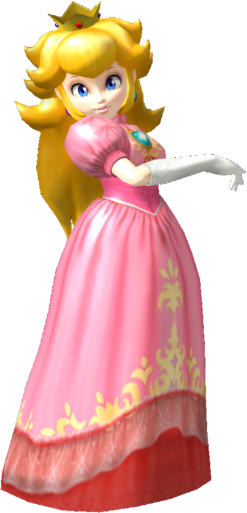

|  | Ranked 6th of tier list : PRINCESS PEACH |
| Weight | |
|---|---|
| 12-14 th heaviest | |
| Shield stats | |
| Grab range | 13th longest |
| Roll lenght | 6th longest |
| Shield size | 13-14th biggest |
| Wavedash lenght | 25-26th longest |
| Movement stats | |
| Walking speed | 19-21st fastest |
| Turning speed | 8-9th fastest |
| Running speed | 23-24th fastest |
| Aerial stats | |
| Jump squat | 6 frames (16th fastest) |
| Short hop | 5-6th highest |
| Aerial speed | 5th fastest |
| First jump height | 19-20th highest |
| Seconde jump height | 10th highest |
| Total jump height | 22nd highest |
| Average fall speed | 21-22th fastest |
| Fast falling speed | 21-24th fastest |
| Falling speed | 22-23rd fastest |
| Ledge stats | |
| 0-99% ledge roll | 6th longest |
| 100%+ ledge roll | 7th longest |
| 0-99% ledge attack range | 22-24th farthest |
| 100%+ ledge attack range | 9-10th farthest |
| Intangible ledgedash | N/A |
| Notable players | |
| Armada, MacD, Swedish Delight, Epsilon | |
| Smashboard forum | |
| http://smashboards.com/forums/peach.74/ | |
Currently, Peach is 6th in the A tier, the highest ranked of any Mario character. Her float cancel gives her a fantastic aerial game, and she can play mindgames by using Toad. Peach also had good chaingrabbing abilities, which is particularly useful against higher tiered characters. She is also the owner of one of the best projectiles in the game. Additionally Peachs recovery is among the best in the game with many options available to her, allowing her to recover at almost any angle. However, Peachs primary flaw is her light eight and floatiness, which makes her more susceptible to JOs, especially on the upper blast lines. Additionally, her slow dash and weak ground attacks, save for her down smash, imper her approach while on the ground.